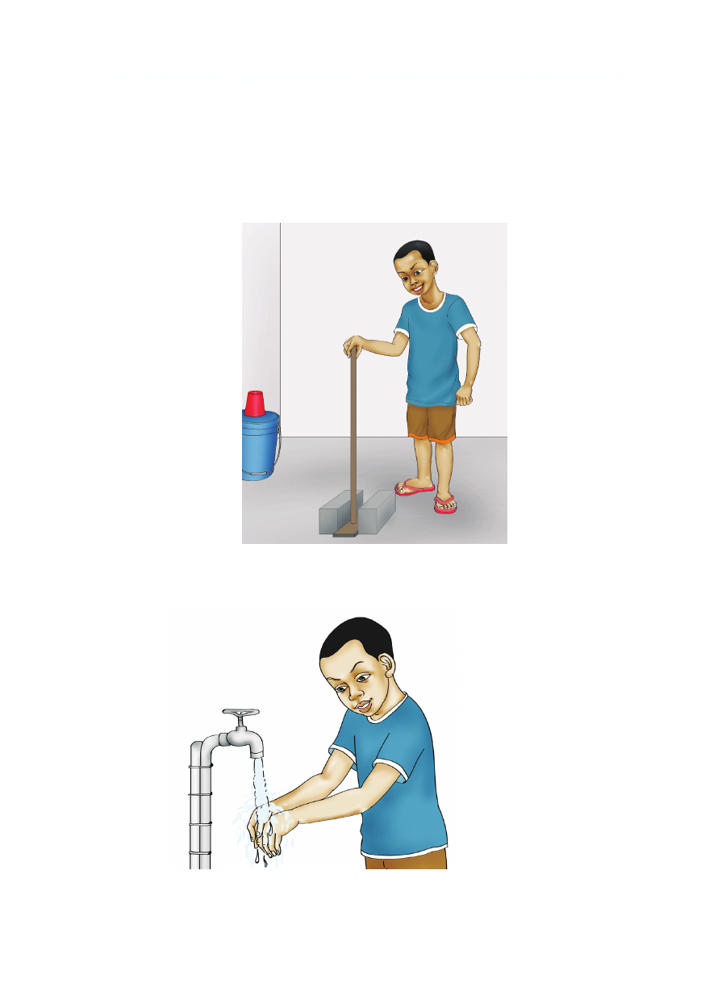

1. Funua mfuniko wa shimo la choo kabla hujakitumia.
2. Tumia choo kwa usahihi kwa kulenga shimo.
3. Jisafishe kwa kutumia maji safi baada ya kujisaidia.
Vilevile, unaweza kujipangusa kwa kutumia karatasi laini.
4. Funika shimo la choo vizuri baada ya kujisaidia.
5. Nawa vizuri mikono kwa maji safi na sabuni.
1. Funua mfuniko wa shimo la choo kabla hujakitumia. 2. Tumia choo kwa usahihi kwa kulenga shimo. 3. Jisafishe kwa kutumia maji safi baada ya kujisaidia. Vilevile, unaweza kujipangusa kwa kutumia karatasi laini. 4. Funika shimo la choo vizuri baada ya kujisaidia. 5. Nawa vizuri mikono kwa maji safi na sabuni.